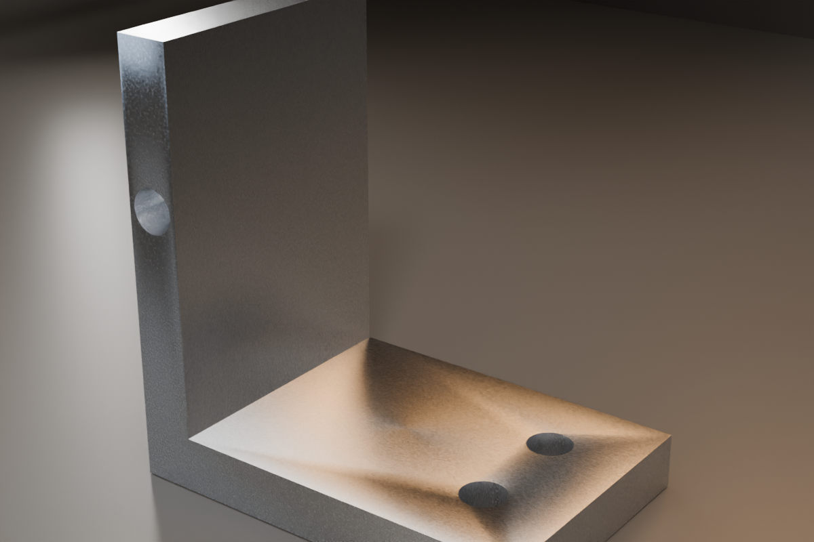
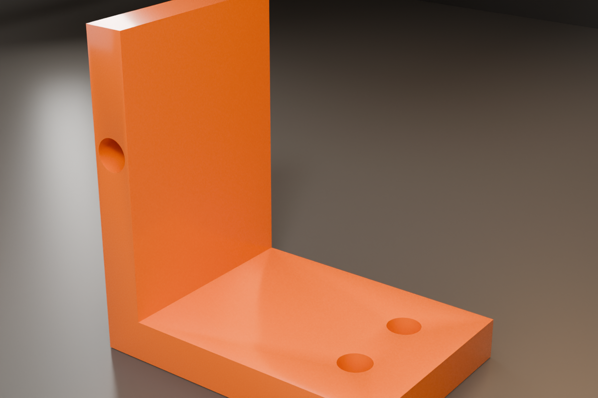
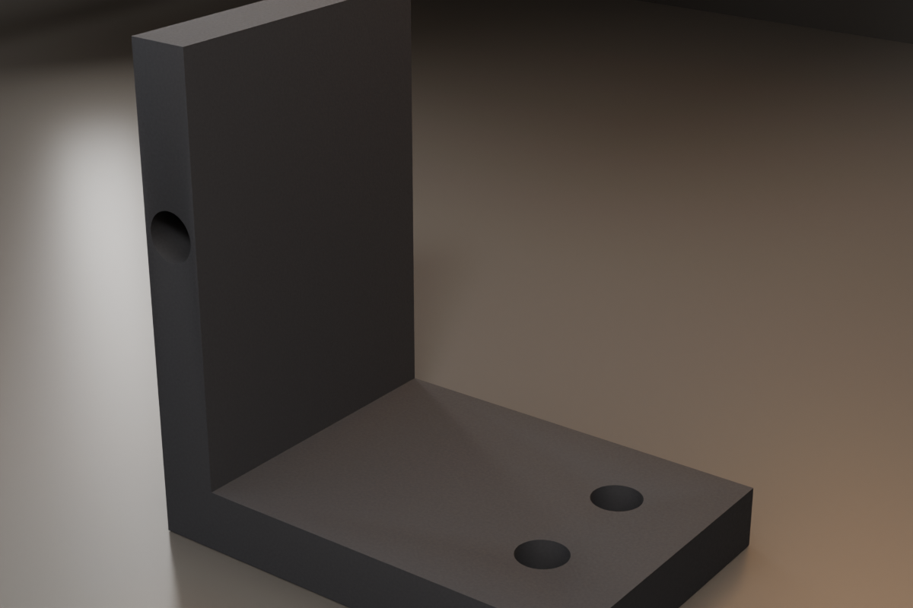

Why FreeCAD looks worse than SolidWorks (and how to close the gap)
The gap is mostly defaults, not capability. FreeCAD ships conservative display settings, a modular UI, and a renderer tuned for compatibility. SolidWorks ships a commercial presentation layer. You can change most of the visual defaults in five minutes.
By Abdullah Usayeed, builder of LearnCad. Last updated October 18, 2026.
The short version. Turn on MSAA anti-aliasing, add a gradient background, switch to SolidWorks navigation, use an orthographic camera, set light gray bodies with dark edges, lower the tessellation deviation, and raise the toolbar icon size. LearnCad Studio does all of it in one click.
What actually creates the visual gap
SolidWorks is not using a fundamentally different kind of geometry. Both programs draw shaded solids with edges. The difference is presentation: how edges are sampled, how the background and lighting are composed, how curves are tessellated, how the camera and navigation behave, and how much visual noise the UI adds around the model.
| What you see | FreeCAD default | Studio look |
|---|---|---|
| Edges | Aliased and jagged | MSAA 4x anti-aliasing |
| Viewport | Flat color | Soft linear gradient |
| Navigation | Blender-style in many setups | SolidWorks navigation |
| Camera | Can drift to perspective | Orthographic |
| Body | Dark gray | Light gray with dark edges |
| Edge width | Thin and near-white | 2 px, dark |
| Curves | Coarse tessellation | Deviation 0.1, angle 10 |
| Icons | 16 px | 24 px |
| Extra guides | Axis cross on | Axis cross off, navi cube on |
1. Anti-aliasing is the single biggest difference
Jagged edges make a model look like a screenshot from 2008. FreeCAD's anti-aliasing is off by default in many configurations. Set it to MSAA 4x in Edit > Preferences > Display > 3D View. Restart FreeCAD. If your GPU can handle it, try MSAA 8x. On a laptop or integrated graphics, 4x is the safer choice.
2. A gradient background reads as "studio"
A flat viewport feels like a wireframe editor. A subtle vertical gradient gives the eye a horizon and makes the part feel lit. In the same preferences page, enable the gradient background and choose two close colors. Dark blue-gray and light gray both work; avoid saturated colors because they fight the model.
3. Navigation and camera behavior
If the mouse does not behave like the CAD package you came from, everything feels wrong even when the model is correct. FreeCAD ships several navigation styles, including a SolidWorks style. Set it once, and keep the camera orthographic for mechanical work. Perspective is useful for presentation, not for measuring.
4. Body color, edge color, and edge width
The default dark gray body with thin near-white edges is functional, not beautiful. A light gray body with dark edges reads like a technical illustration. Use Flat Lines display so the shaded surface keeps crisp edges, set line width to 2 px, and keep transparency at zero.
5. Tessellation makes curves look cheap
A cylinder looks like a polygon when the mesh deviation is coarse. Lower Mesh deviation to about 0.1 and angular deflection to about 10 in the Part preferences. This affects how many triangles are used to display curved surfaces. It costs some GPU time, but it is the difference between a smooth bore and a faceted one.
6. UI density and icons
FreeCAD's default 16 px icons and many toolbars make the application feel older than it is. Increase the toolbar icon size to 24 px, hide toolbars you do not use, and close the Start page. A clean workspace changes the perceived quality as much as the renderer.
7. Materials and photorealistic rendering
SolidWorks has a commercial material and lighting library. FreeCAD can do nice renders with external tools, but its default viewport is not a product-visualization renderer. Do not chase photorealistic materials for mechanical design. Chase readable edges, correct dimensions, and a clean background.
The one-click version: LearnCad Studio
LearnCad 0.4 adds a Studio button. It applies the viewport settings above and sets the preferences that need a restart.
- Install LearnCad and open FreeCAD.
- Open the LearnCad Mentor panel and press Studio.
- Restart FreeCAD for anti-aliasing and the 24 px icons.
- For a light UI, use LearnCad > Studio Light Theme from the workbench menu, then restart.
The Studio button is not magic. It writes the same settings you would change by hand. It just writes them together, with values that are known to look good.
For photorealistic stills, use Blender
Blender will not replace FreeCAD's interactive viewport. It is a separate renderer, and its codebase is a full 3D suite, not a drop-in FreeCAD module. What it can do is produce presentation images with real lights, materials, soft shadows, and a camera.
LearnCad includes a Blender bridge. Install Blender, set the path in **Setup**, and press **Render** in the panel. LearnCad exports the active solid, runs Blender headless with a studio scene, and opens the resulting 1200x800 PNG. It is a still render, not an interactive viewport.
The practical split: FreeCAD for editing and constraints, LearnCad's orange/black viewport for everyday work, Blender for the final beauty shot.
Three built-in material presets: brushed aluminum, satin orange plastic, and matte black rubber. Choose the material and render engine in LearnCad Setup.



Manual settings, if you do not want LearnCad
- Anti-aliasing: Edit > Preferences > Display > 3D View > Anti-aliasing > MSAA 4x. Restart.
- Gradient: same page, enable the gradient background. Choose two close colors.
- Navigation: Edit > Preferences > Display > Navigation > SolidWorks.
- Camera: View > Orthographic (or the camera type menu in the 3D view).
- Axes and cube: View > Toggle axis cross off; View > Toggle navigation cube on.
- Colors: Edit > Preferences > Display > Colors. Set a light gray shape color and a dark line color.
- Tessellation: Edit > Preferences > Part/Part Design > Shape view. Lower deviation and angular deflection.
- Icons: Edit > Preferences > General > Toolbar icon size > 24 px. Restart.
The honest limits
FreeCAD will not become SolidWorks by changing colors. The kernels, the feature set, the assembly tools, the drawing environment, the material library, and the UI architecture are different products. The goal is a clean, professional working viewport, not a clone. For mechanical design and 3D printing, readable geometry matters more than cinematic shading.
- Kernel: different modeling kernel and feature behavior.
- Materials: no commercial material/lighting library by default.
- Assemblies: different assembly workflow and visualization.
- UI: modular Qt workbenches, not a single commercial shell.
- Rendering: viewport quality is not the same as a product render.
FAQ
Can FreeCAD look like SolidWorks?
It can look much closer. The biggest gaps are anti-aliasing, gradient lighting, navigation style, tessellation, shape and edge colors, and UI density. It will not be pixel-identical because the renderers and UI toolkits are different.
Why are FreeCAD edges jagged?
Anti-aliasing is off by default in many FreeCAD configurations. Set Anti-aliasing to MSAA 4x or 8x in Display > 3D View and restart FreeCAD.
Does anti-aliasing slow FreeCAD down?
It can. MSAA 4x is a good balance on most GPUs. MSAA 8x looks better but costs more, especially on integrated graphics or very large assemblies.
Do I need LearnCad to change these settings?
No. Every setting is available in FreeCAD preferences. LearnCad Studio applies them in one click and also sets the live view options.
Will it look exactly like SolidWorks?
No. The geometry kernel, renderer, materials, camera behavior, and UI architecture are different. The goal is a clean, professional viewport that is pleasant to work in, not a clone.
Install LearnCad and press Studio.
One click for the viewport. One restart for anti-aliasing and icons.